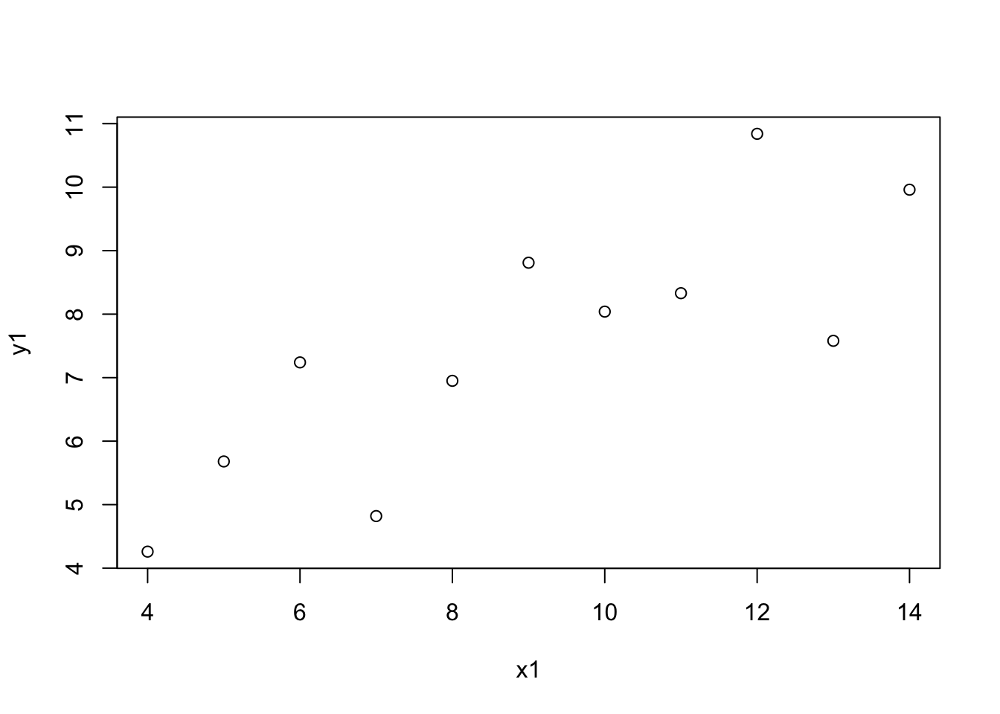
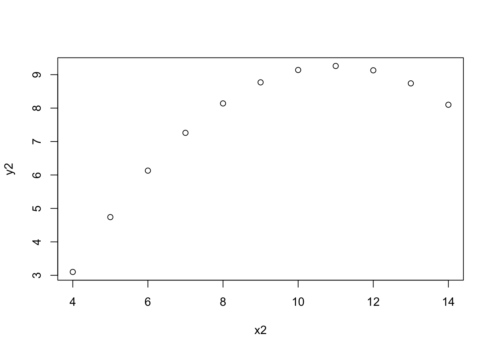
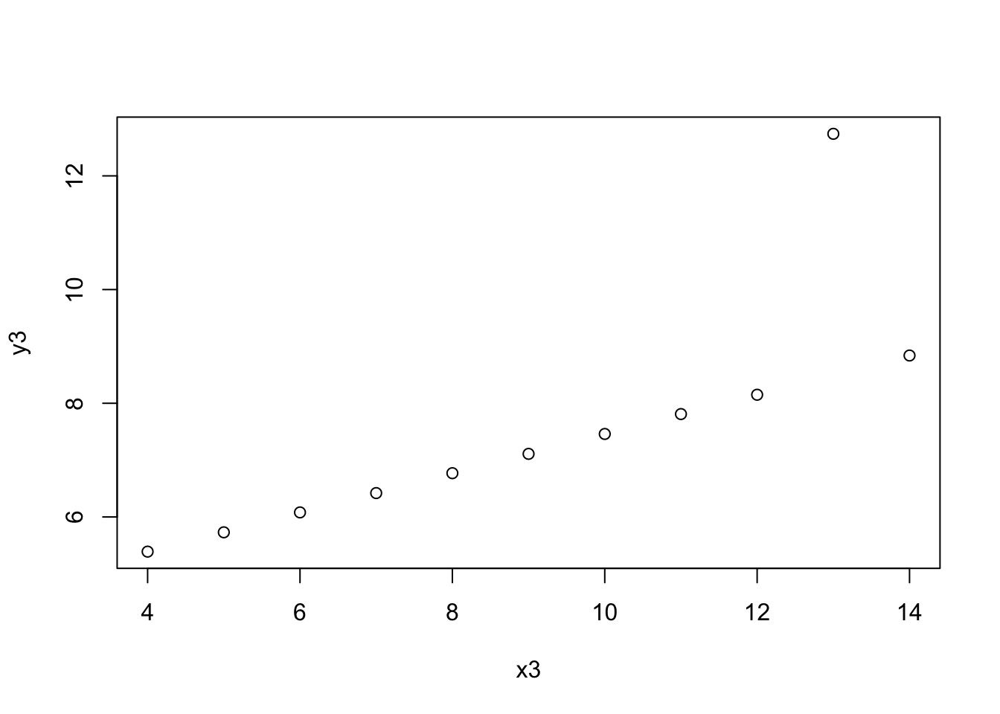
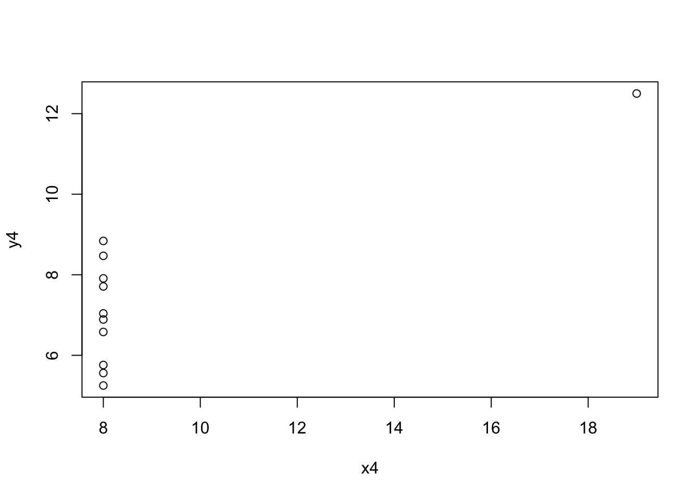

library("ggplot2")
library("datasauRus")
ggplot(datasaurus_dozen, aes(x = x, y = y, colour = dataset))+
geom_point() +
theme_void() +
theme(legend.position = "none")+
facet_wrap(~dataset, ncol = 3)
One stats class was required in my grad program, and Mike Meyer was my professor. The class was in S-plus, the closed source inspiration for R. And Mike regularly exhorted us (in his inimitable Australian accent), “Plot your data!”
Mike’s encouragment to use S-plus made it easier for me to adopt R when it appeared on the scene a few years later. Or at least I had fewer habits to change. And, Mike’s advice about plotting your data first always made sense to me. If you can’t see a pattern in the plots, how can you believe the inferential statistics?
In that spirit, mostly so that I can find it again, is an outstanding demonstration of that truth, the datasauRus package, based on Anscombe’s quartet (Anscombe 1973), which is also available as the anscombe package.
library("ggplot2")
library("datasauRus")
ggplot(datasaurus_dozen, aes(x = x, y = y, colour = dataset))+
geom_point() +
theme_void() +
theme(legend.position = "none")+
facet_wrap(~dataset, ncol = 3)
These all have roughly the same summary statistics.
if(requireNamespace("dplyr")){
suppressPackageStartupMessages(library(dplyr))
datasaurus_dozen %>%
group_by(dataset) %>%
summarize(
mean_x = mean(x),
mean_y = mean(y),
std_dev_x = sd(x),
std_dev_y = sd(y),
corr_x_y = cor(x, y)
)
}# A tibble: 13 × 6
dataset mean_x mean_y std_dev_x std_dev_y corr_x_y
<chr> <dbl> <dbl> <dbl> <dbl> <dbl>
1 away 54.3 47.8 16.8 26.9 -0.0641
2 bullseye 54.3 47.8 16.8 26.9 -0.0686
3 circle 54.3 47.8 16.8 26.9 -0.0683
4 dino 54.3 47.8 16.8 26.9 -0.0645
5 dots 54.3 47.8 16.8 26.9 -0.0603
6 h_lines 54.3 47.8 16.8 26.9 -0.0617
7 high_lines 54.3 47.8 16.8 26.9 -0.0685
8 slant_down 54.3 47.8 16.8 26.9 -0.0690
9 slant_up 54.3 47.8 16.8 26.9 -0.0686
10 star 54.3 47.8 16.8 26.9 -0.0630
11 v_lines 54.3 47.8 16.8 26.9 -0.0694
12 wide_lines 54.3 47.8 16.8 26.9 -0.0666
13 x_shape 54.3 47.8 16.8 26.9 -0.0656And here are the originals from (Anscombe 1973):
with(anscombe, plot(x1, y1))
with(anscombe, plot(x2, y2))
with(anscombe, plot(x3, y3))
with(anscombe, plot(x4, y4))
Thanks for giving me such a great start in statistics, Mike! I’m sure if the Datasaurus had been around then, you’d have been a fan.